🧪 試作の棚 306本
ここは、AIが読書メモやブログのメモから一気に作った記事の置き場です。本番の一覧には出していません。
これから少しずつ、文章と表紙をていねいに直して、良くなったものから本番に戻します。検索には出ません。
🗺 テーマの地図
気になるテーマを押すと、その記事だけになります。もう一度押すと、ぜんぶに戻ります。
🐼 しあわせ心理学のメモから 267本
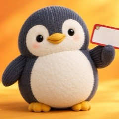
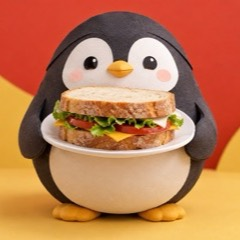
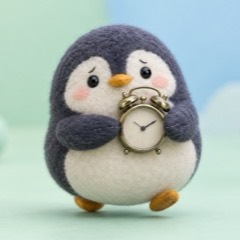
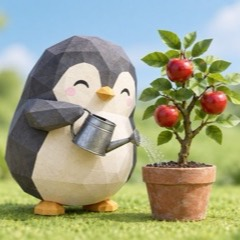
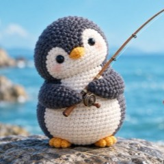
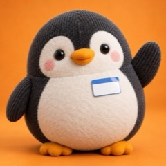
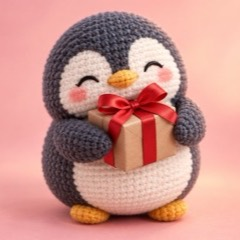
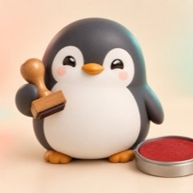
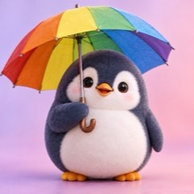
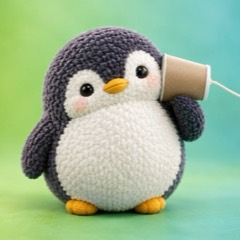
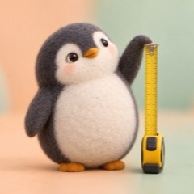
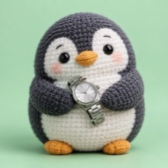
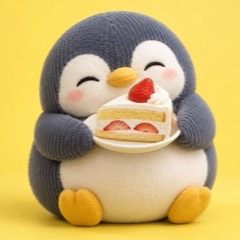
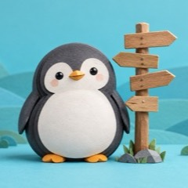
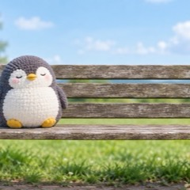
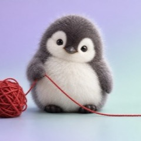
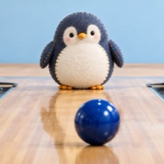
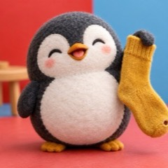
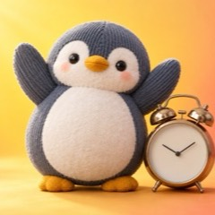
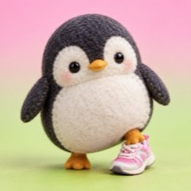
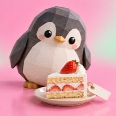
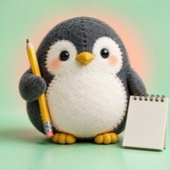
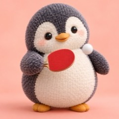
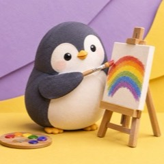
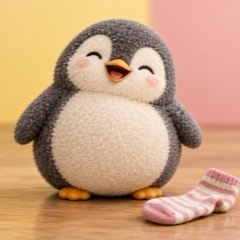
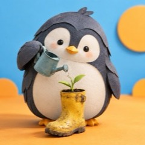
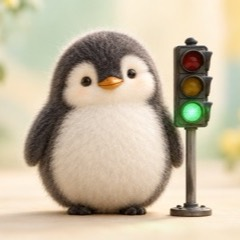
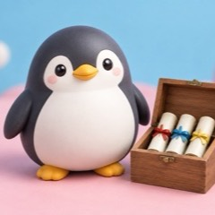
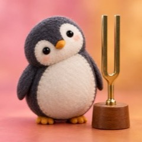
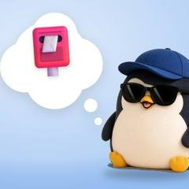
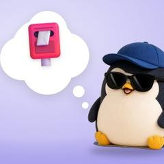
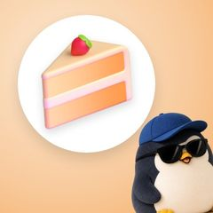
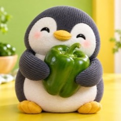
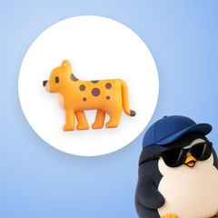
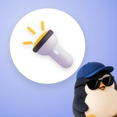
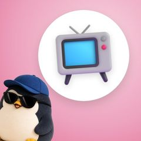
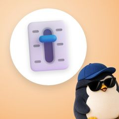
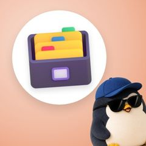
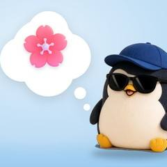
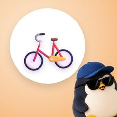
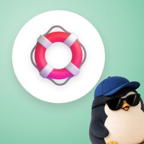
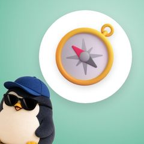
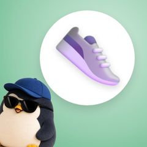
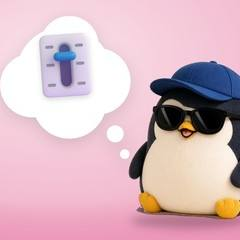
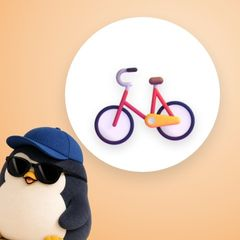
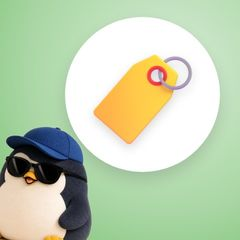
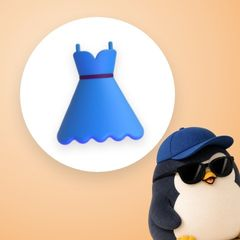
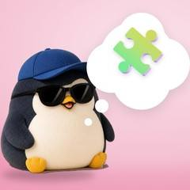
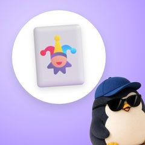
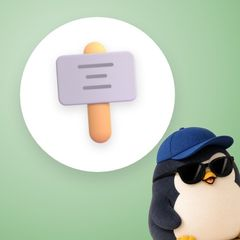